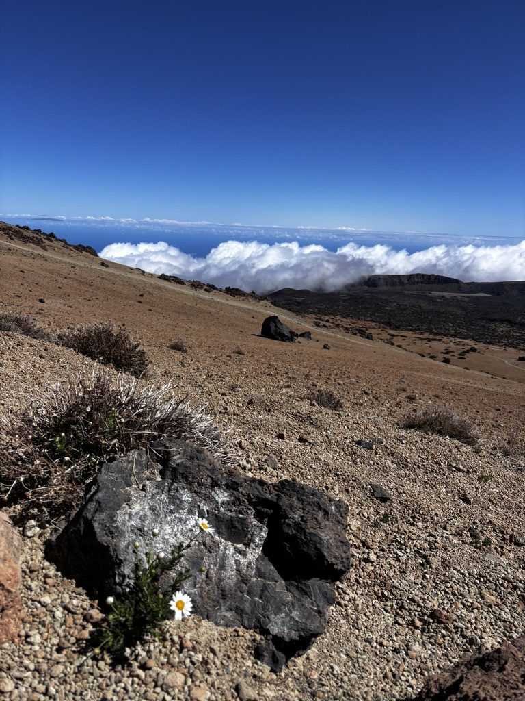
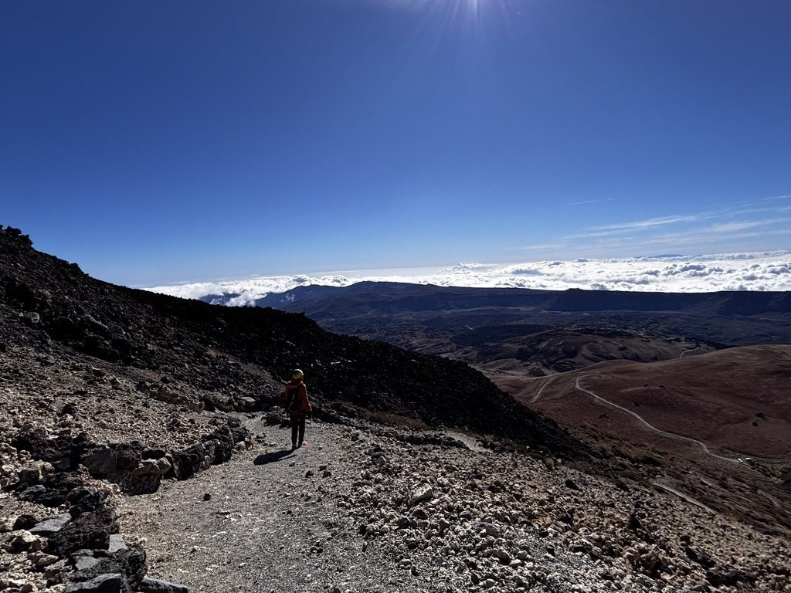
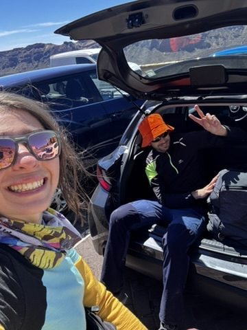
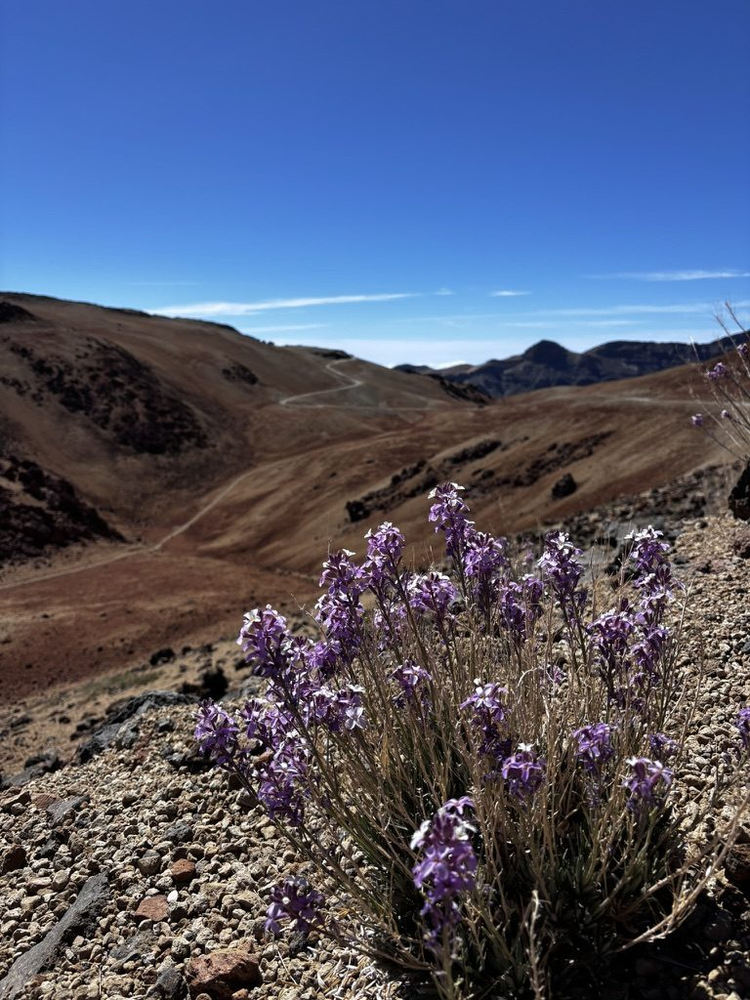
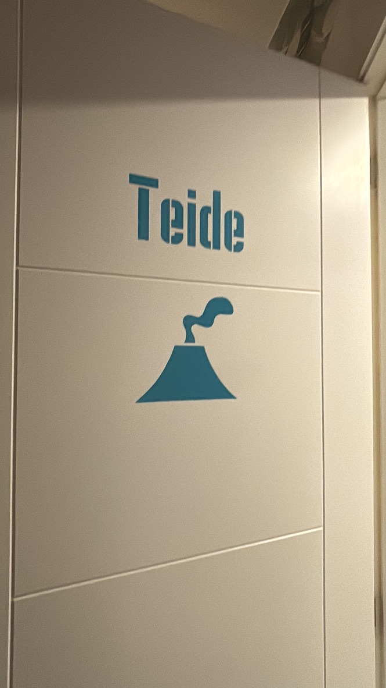

The El Teide hike is not technically difficult. It is long, it is exposed, the wind above 3000 metres has strong opinions, and the altitude affects people differently — but it is not a technical climb. What it is, is a full day. By the time you're back at the bottom, you have been on your feet for somewhere between seven and ten hours, gained and lost more than 1600 metres of elevation, and crossed terrain that looks like it belongs on another planet. When it's done, you feel it in every part of yourself.
I knew all of this going in. What I didn't know was how the day would end — which is usually how the best hiking stories start.
The approach: the remote woods
The section of the hike most people skip — because they drive to the national park and start from there — is the approach through the lower forests. If you start from the town and walk up through El Teide's wooded skirt, you get an hour of pine forest before the landscape opens into the volcanic national park. These woods are quiet and smell strongly of resin and the light through the trees has a particular quality, low and golden, that makes the whole thing feel more like the beginning of a story than the beginning of a hike.

The lower woods. Most people drive past this part. That's a mistake.
There is something about a long walk-in that prepares you mentally for what's coming in a way that parking and starting doesn't. The body warms up. The mind settles. By the time the forest gives way to the first views of the volcanic caldera, you're already in the right state.
The landscape that keeps getting bigger
El Teide's national park is a UNESCO World Heritage Site, which usually means something was worth protecting. In this case what was worth protecting is a caldera — a collapsed ancient volcano — that is so vast and so alien in its appearance that standing inside it feels genuinely surreal. The rock formations are dark and textured. The colours shift from black to ochre to a deep rust red. The summit cone rises from this in a perfect geometric shape against a sky that is always, at this altitude, a very intense blue.

The caldera. The summit behind that. Everything is bigger than the photographs suggest.
The part where you listen to your body
Above 2500 metres the hike changes character. The path is steeper, the air is thinner, and the wind, if it's present, is no longer ambient — it is an active participant. You slow down. Not because you want to, but because your body negotiates a new pace at altitude that your ego takes a while to accept. The trick, which took me too many hikes to learn, is to stop fighting this and start listening. The body knows more about altitude than the part of you that wants to push harder.

Explore. Listen to your body. Feel the nature. Especially at altitude, where the body has more sense than the plan.
The top, and the people who also made it
There is a particular camaraderie at the top of a difficult hike. You didn't all start together, you don't all know each other, but you arrived at the same high point by the same effort and that creates an instant common ground. The summit of El Teide — the highest point in Spain at 3715 metres — had, on the day I arrived, a small group of people who had all clearly been through something and were sharing the view with the specific satisfaction of people who earned it.

The people who made it. There is a very specific energy at the top of a hard hike. These people had it.
Coming back down
The descent from the highest peak in Spain is long. Your knees develop opinions. The volcanic gravel shifts underfoot in an inconsistent way that requires continuous small adjustments. The landscape that looked dramatic on the way up now looks large in a different way — you understand the scale of what you covered. At the bottom of the caldera, when the path re-enters the pine forest and the smell of resin comes back and the light goes golden again, there is a feeling of completion that is specific and real and worth whatever the legs are saying about it.

Way back from the highest peak in Spain. The legs have feedback. The view doesn't care.
The room
I got back to town in the early evening, showered at a petrol station tap because there was one and it was available, and dragged myself to the hostel I'd booked before the hike. Checked in. The person at the desk handed me a key with a small tag on it.
The room was called El Teide.

The room. Called El Teide. After the hike called El Teide. I have never felt more like I deserved a specific room in my life.
I stood in the doorway for a moment just appreciating this. The universe occasionally has a sense of proportion about things. I dropped my pack, lay down on the bed, and did not move for approximately eleven hours. The room earned its name. So, for once, did I.